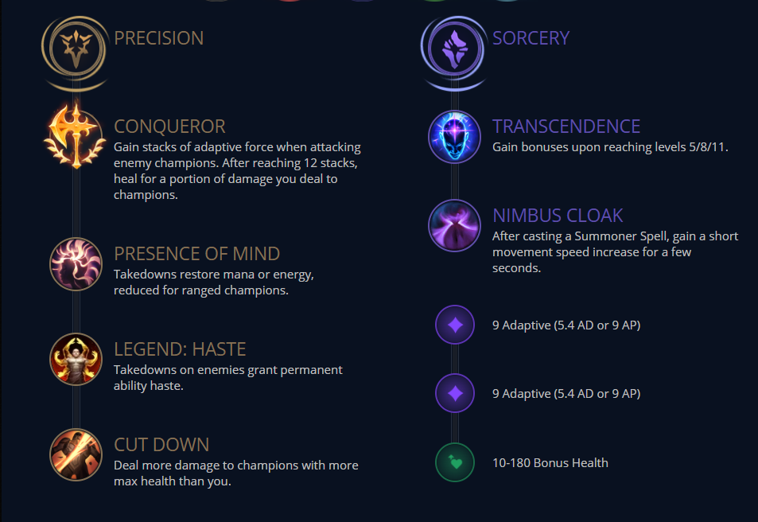
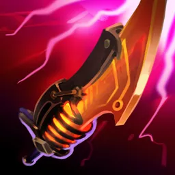
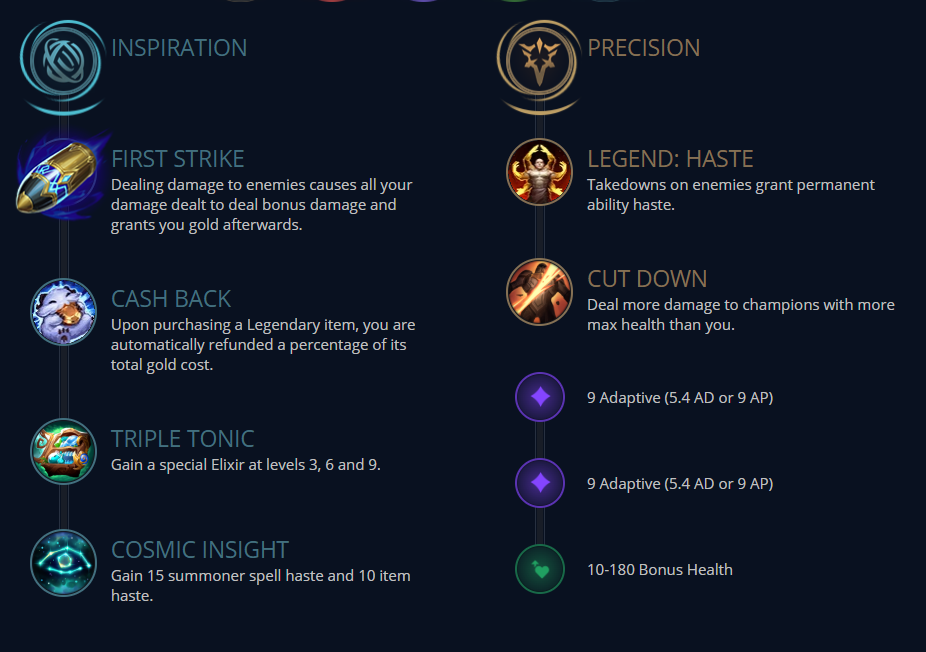

Standard
?
This will work everygame so if you are looking for the most consistent
setup this is for you. This is also the best for when you are facing tankier teams. You can go more lethality with this
setup but I would just stick too the more bruiser path since it works great with conqueror.





⭐First Strike⭐
?
The First Strike setup is my personal favorite and everytime It's
viable I take it. It can be very snowballie if you pare it with cheap lethality items and the late game dmg is really fun.
The thing you gotta look out for is that you need to make sure you can proc it consistently in lane without much trouble.


Electrocute
?
Electrocute is for when you are facing matchups where you have
consistent kill angles but you cant take extended trades in lane for example Twisted Fate
he's quite easy to kill but if you trade for too long he will get his gold card so short trades with electrocute
is good. This setup also works well when you are facing full squishy comps.

Secret Tech
?
This setup is basically my answer for Mel and a little bit Xerath.
I hate those two so I coocked up this setup that makes the matchups quite easy. They can never kill you in lane
and you just keep poking them down with comet+scorch. When you start feeling more conformatable I would suggest going
conqueror or electrocute setup against Xerath